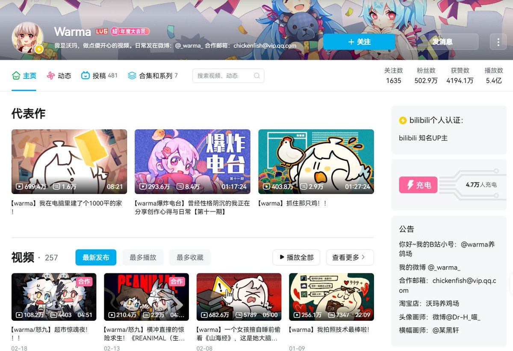
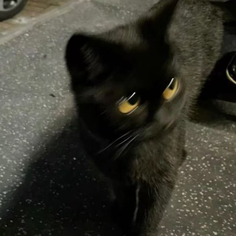

Warma广场
@Warma_Plaza
@VincentLogic (o゜▽゜)o☆[BINGO!]
谢谢啦～(*°∀°)=3
欢迎你加入沃门！沃门保平安(ღ˘⌣˘ღ)


Vincent｜只上干货
@VincentLogic
Vincent｜只上干货
@VincentLogic
如何评价 B 站 UP 主 warma？
warma 能火这么多年，不是靠运气，是靠边界感。
warma 是谁？
B 站多面创作型 UP 主，视频类型广泛。
动画手书、歌唱配音、游戏实况、杂谈生活分享，几乎全是一个人完成。
2026 年还在持续更新，生命力很强。
为什么她能没仇恨值？
第一，谨慎发言。 https://t.co/SNP8nSmgYR